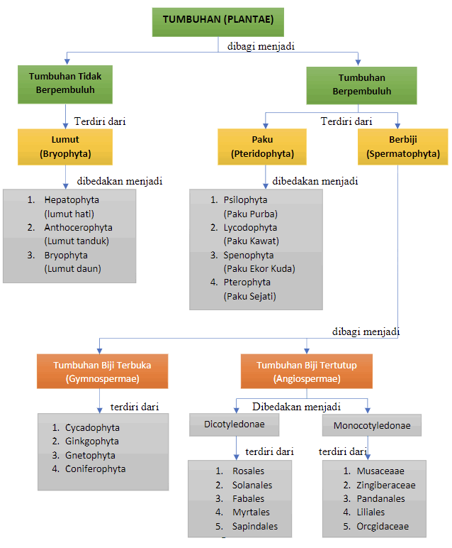

Quotes

A. Deskripsi Modul
Modul Biologi berbasis Local Wisdom materi plantae ini disusun dengan harapan memberikan penjelasan materi plantae yang dibutuhkan oleh siswa-siswi SMA/MA yang meliputi pengertian plantae (tumbuhan), ciri-ciri plantae, klasifikasi plantae, dan peranan plantae bagi kehidupan.
Modul ini berisikan materi plantae yang dikaitkan dengan local wisdom daerah setempat seperti pemanfaatan tumbuhan obat oleh masyarakat yang akan menambah pengetahuan bagi peserta didik.
Pembelajaran biologi materi plantae yang dikaitkan dengan local wisdom gunanya untuk menggaribkan local wisdom dalam dunia pendidikan yang memanfaatkan lingkungan lokal sebagai sumber belajar.
Tujuan penyusunan modul biologi materi plantae ini untuk memfasilitasi peserta didik dalam memahami materi plantae. Selain itu, diharapkan dengan menggunakan modul ini peserta didik dapat belajar dengan mandiri serta dapat digunakan sebagai media pembelajaran oleh peserta didik.

B. Kompetensi Dasar & Indikator
3.7 : Menerapkan prinsip klasifikasi untuk menggolongkan tumbuhan ke dalam divisio berdasarkan pengamatan ....
Kompetensi Dasar
-
3.7 : Menerapkan prinsip klasifikasi untuk menggolongkan tumbuhan ke dalam berdasarkan pengamatan morfologi dan metagenesis tumbuhan serta mengaitkan peranannya dalam kelangsungan kehidupan di bumi.
-
4.7 : Menyajikan data tentang morfologi dan peran tumbuhan pada berbagai aspek kehidupan dalam bentuk laporan tertulis.
Indikator
-
1. Mengidentifikasi ciri-ciri umum plantae.
- 2. Menyebutkan ciri-ciri tumbuhan lumut, paku dan berbiji.
- 3. Mengklasifikasikan tumbuhan lumut, paku dan berbiji.
- 4. Menjelaskan siklus hidup tumbuhan lumut dan paku.
- 5. Mengaitkan peranan tumbuhan lumut, paku dan berbiji dalam kehidupan sehari-hari.
- 6. Menunjukan hasil pengamatan tumbuhan lumut, paku dan berbiji di sekitar rumah.

C. Petunjuk Penggunaan Modul
1. Berdoalah sebelum memulai kegiatan pembelajaran...
- 1. Berdoalah sebelum memulai kegiatan pembelajaran.
- 2. Baca dan pahami kompetensi dasar dan tujuan pembelajaran dari setiap kegiatan pembelajaran.
- 3. Baca dan pahami uraian materi serta rangkuman yang ada dalam modul ini dengan baik.
- 4. Kerjakan secara benar soal latihan dalam setiap kegiatan belajar.
- 5. Pelajari kembali bila hasil soal evaluasi belum mencapai 80%.
- 6. Tanyakan kepada guru bila menemui kesulitan dalam belajar.
Peta Konsep
